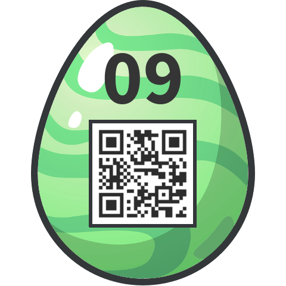

Mirror, mirror, on the wall, who's the fairest of them all?
As the title promises, there are a number of mirror images to be performed. The file provided, evihcra.piz, needs to be read backwards (bytewise) to create a legitimate zip file, archive.zip. This contains a single file, 90gge.gnp.
To my great surprise, 90gge.gnp is almost a legitimate PNG. Only the "magic bytes" at the start need to be reversed, from 89 47 4E 50 to 89 50 4E 47.
To round things off, the image needs to be flipped horizontally, and the colour table inverted.